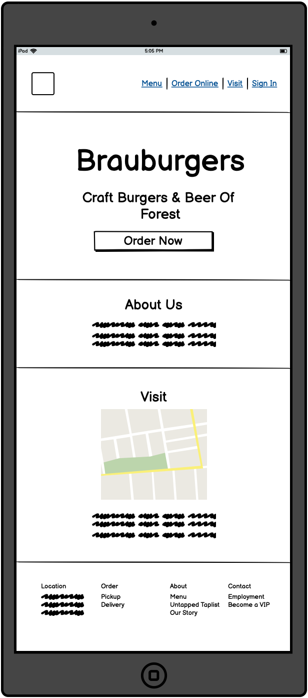
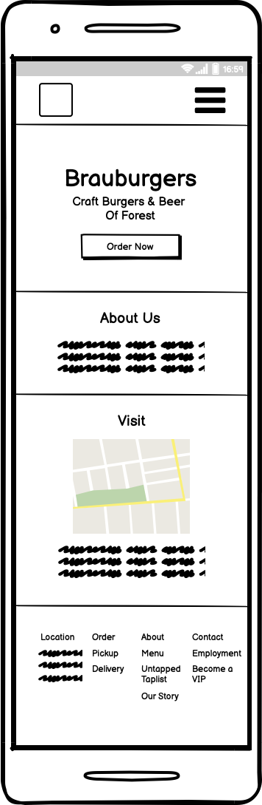

For my User Interfaces & User Experiences class, we were assigned the
task of redesigning a public-facing webpage and improving upon users'
experiences interacting with this site. I chose to redesign the home
page of Brauburgers' website. Brauburgers is a sit-down burger place
and is not a chain, so it doesn't have dedicated designers working on
its Web pages.
Part 1: Identifying Usability Problems
Picking a Web page
You can find the original home page of Brauburgers' website
here. I chose to redesign
this page since this is a restaraunt I've frequented quite often
growing up, and for this reason I wish its web interface had a much
better user experience.
Fig 1. Brauburgers' homepage.
Beyond this initial screenshot, here are a few more views of this
webpage, as a user scrolls all the way down:
Fig 2. The order pickup view of Brauburgers' homepage.
Fig 3. The contact information section of Brauburgers'
homepage.
Fig 4. The bottom of Brauburgers' homepage.
Finding Problems
I found that Brauburgers' site was not very intuitive to use, and
could be improved in the following areas:
Making the site's purpose more understandable
When landing on the page, there is little text explaining what
Brauburgers' is, or how to interact with the site. Instead we only
see a large image with very little context.
The menu and order images appear to be buttons, but they are not
clickable.
There is a "See You At The Brau" button actually just makes the
"See You At the Brau" image expand, and has no additional
functionality.
When we do reach Brauburgers' description much further down in the
page, the description is in bold face, making reading the
description feel much more agressive.
Navbar confusing
The different sections of the page are often not labeled
carefully, such as the about us/description section being called
"Craft Burgers & Beer."
In addition, the font size of Brauburgers' description is quite
small, make it less legible to certain users.
Accessibility
While inspecting this site's accessibility, I found the following
issues:
One traditional image was missing alternative text.
One spacer image (an image used mostly for layout) was missing
alternative text as well.
One warning I also received was that a <noscript> tag was
present on the site. Often the contents within <noscript> tags
are used to present an accessible version of an inaccessible site, but
we should still ensure that the scripted content is accessible as
well.
Part 2: Visual Redesign
Low-fidelity Wireframing

Fig 2. A low fidelity wireframe of the mobile view for
Brauburgers' homepage

Fig 3. Brauburgers' homepageFig 4. Brauburgers' homepage
Visual Design Style Guide
High-Fidelity Prototyping
Part 3: Responsive Redesign
Thanks for reading! I hope this portfolio entry helped pave a way for
users' enhanced experience interacting with Brauburgers' website!